加拿大东部豪华高尔夫之旅
第一天
多伦多
安大略省之首府多伦多(Toronto)是加拿大第一大城市，北美第四大城市，是加拿大文化、经济的中心，也是交通要枢，兼全国制造业的心脏。由于这里的犯罪率极低、环境怡人，多伦多被认为是全球最宜居城市之一。多伦多的教育资源非常丰富，一直是很多中国莘莘学子梦想的留学地。市内有著名多伦多大学、约克大学、怀雅逊大学以及辛尼加学院，附近又有滑铁卢大学、皇后大学、西安大略大学。同时，多伦多是一座充满生机的多元文化之城，中华文化随处可见。在多伦多的对岸，是美国的纽约州，闻名世界的尼亚加拉大瀑布，距多伦多仅100公里。
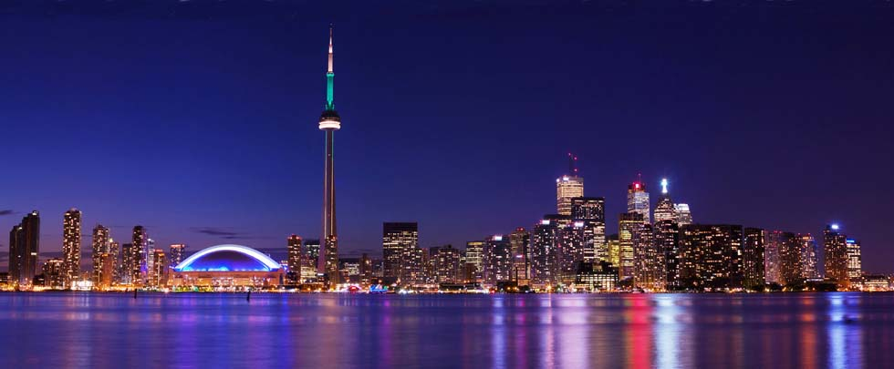-
13:55
海南航空7975从北京国际机场起飞。（具体航班以出团通知书为准）
-
15:20
到达多伦多皮尔逊机场，全程飞行13小时。
-
到达加拿大多伦多皮尔逊(Pearson)国际机场，每位旅客派发一张国际长途电话卡，可以向国内家人报平安，在接下来的8天之旅中与国内保持联络。
-
由豪华加长悍马车接机开往美丽的多伦多市中心，入住市中心Omni King Edward贵族酒店。
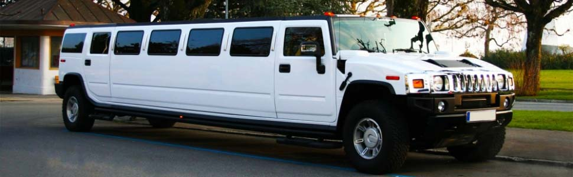
-
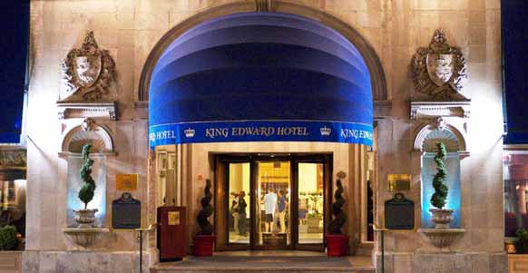晚餐在Omni King Edward酒店举行欢迎晚宴（多伦多政高界名人參加）。
第二天
-
早餐在Omni King Edward酒店享用。
-
10:00
准时在圣乔治球场开球。打球过程中有加拿大著名教练陪同指导。中场有香槟或白葡萄酒助兴不打球的旅客可以随车前往多伦多著名的Yorkdale Shopping Mall购物, 获得等值打球费用返还。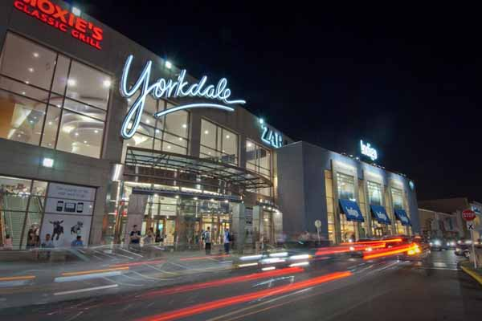
-
午餐有精美小食和简餐供应。
-
15:00
结束打球，旅客前往洗漱间洗漱、更衣。
-
16:00
返回多伦多市中心酒店稍作休息。
-
18:30
晚餐在世界闻名的加拿大国家电视塔(CN Towel)的旋转餐厅，享受美食的同时俯瞰市中心的壮观景色。
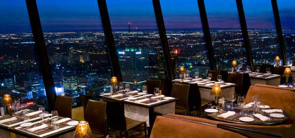
怡陶碧谷圣乔治高尔夫俱乐部（或同级）
怡陶碧谷是安大略省多伦多市西部的一个地区，曾一度在大多伦多市内具有市级行政地位，南临安大略湖(Lake Ontario)，西接密西沙加(Mississauga) 和多伦多皮尔逊国际机场 YTO 。怡陶碧谷(Etobicoke)的圣 乔治高尔夫球俱乐部 St. George Golf Club 久负盛名，建造于北美兴旺的20年代。球场靠近安大略湖岸边，1029年对外开放。球场全长7025码，标准杆是71杆，弯曲的球道和起伏的地形对于打球者都是一个重大的挑战。球场举办过四届加拿大公开赛，而LPGA精英赛也五次在这里举办，是加拿大排名第三的球场。
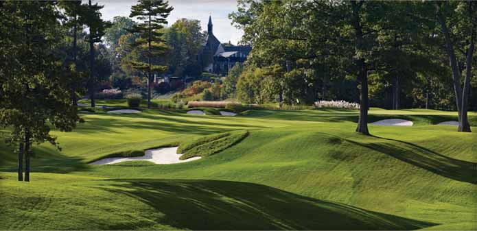第三天
-
早餐在Omni King Edward酒店享用。
-
10:00
准时在汉密尔顿球场开球。打球过程中有加拿大著名教练陪同指导。不打球的旅客可以随车前往尼加拉瀑布的奥特莱斯名品折扣店购物，并享受同等打球价值返还。
-
午餐有精美小食和简餐供应。
-
15:00
结束打球，旅客前往洗漱间洗漱、更衣。
-
16:00
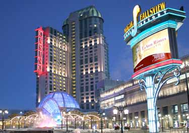开车前往世界闻名的尼亚加拉大瀑布，入住 Fallsview Casino Resort 赌场酒店，酒店房间直对瀑布壮丽景色。
-
18:30
在赌场酒店晚餐，餐后享受欢快的Casino自由游玩。
汉密尔顿高尔夫乡村俱乐部（或同级）
汉密尔顿是安大略省东南部的一座港口城市，位于多伦多以西及尼亚加拉瀑布以北，著名的麦克马斯特大学(McMaster University)就位于汉密尔顿市内 。汉密尔顿高尔夫乡村俱乐部树木风貌，环境优美。球场共有三个九洞，分别叫南球场、西球场和东球场。锦标赛包括西球场（前九洞）和南球场（后九洞），于1916年对外开放，世界百大球场之一。
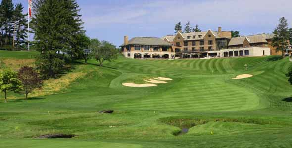第四天
-
早餐在Fallsview Casino Resort酒店享用。
-
11:00
前往尼亚加拉瀑布游船、影像、直升飞机低空飞行游览瀑布全貌。
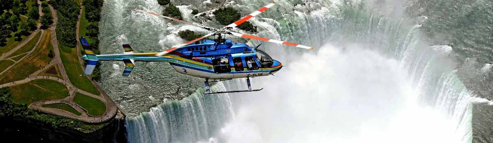
-
午餐在面对尼亚加拉瀑布西餐厅享用。
-
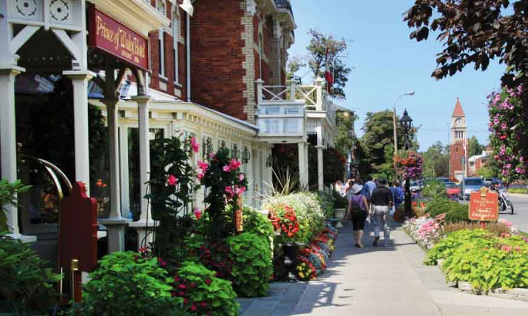下午前往滨湖尼亚加拉小镇Niagara On The Lake感受风景优美、繁花似锦的面湖小镇风情。
-
晚餐在当地贵族酒庄享用，并包括本地红酒、冰酒文化，风土人情以及贵族礼仪的介绍。
Niagara Falls 尼亚加拉瀑布 小镇悠闲放松日
尼亚加拉瀑布是由三座位于北美洲五大湖区尼亚加拉河上瀑布的总称，平均流量2,407立方米/秒，与伊瓜苏瀑布、维多利亚瀑布并称为世界三大跨国瀑布。尼亚加拉瀑布以美丽的景色，巨大的水利发电能力和极具挑战性的环境保护工程而闻名于世。 尼亚加拉河连接伊利湖和安大略湖并分隔美国纽约州和加拿大安大略省，在流经宽约350米的美国公羊岛时跌入断崖，并一分为二，形成两个瀑布，是非常受游客欢迎的旅游景点。
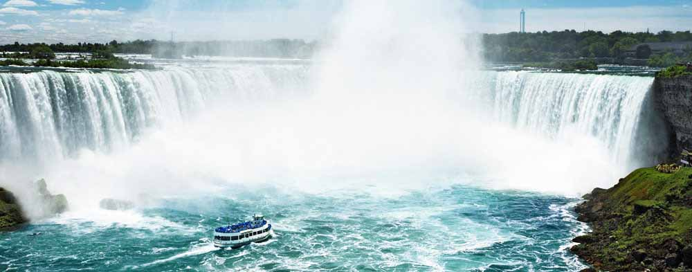第五天
-
早餐在Fallsview Casino Resort酒店享用。
-
9:00
准时在西山球场开球。打球过程中有加拿大著名教练陪同指导。不打球的旅客可以随车前往尼加拉瀑布的奥特莱斯名品折扣店购物。
-
午餐有精美小食和简餐供应。
-
14:30
结束打球，旅客前往洗漱间洗漱、更衣。
-
15:30
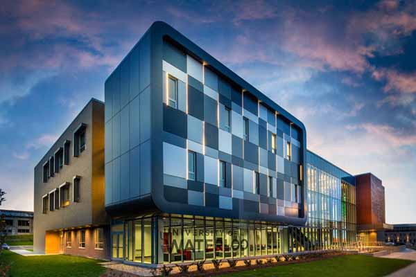前往参观著名的滑铁卢大学和麦克马斯特大学。
-
18:00
返回多伦多，入住市中心四季酒店。晚餐在著名的意大利餐厅Ciao享用。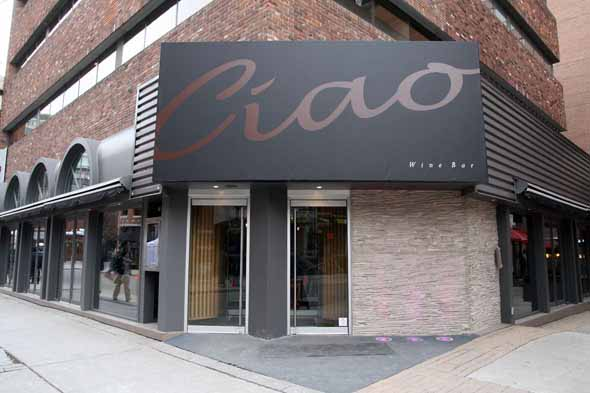
基奇纳西山高尔夫球俱乐部（或同级）
基奇纳是南安大略省滑铁卢区的行政中心，与邻近的滑铁卢市合称“基奇纳－滑铁卢”。该市拥有世界著名的滑铁卢大学， 建校于1957年，以数学、计算机科学、工程学而闻名，占地面积约为1000英亩。 15年来一直被评为加拿大非医博类综合类排名第一，学校最著名的专业数学、工程学和计算机科学，在国际上被认定为空前未有的成功。西山高尔夫球场是加拿大首屈一指的高尔夫球场之一，一直位居前15名。球场拥有美丽的维护，冠军级别18洞高尔夫球场并且配有储备充足和经营专卖店，电动高尔夫球车，球童和友好、专业的工作人员。
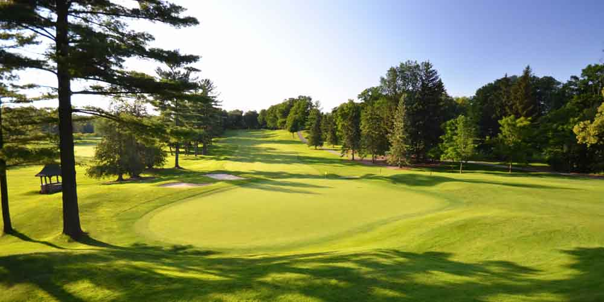第六天
-
早餐在酒店享用。
-
9:00
准时在伍德布里奇高尔夫乡村俱乐部球场开球。打球过程中有加拿大著名教练陪同指导。不打球的旅客可以随车旺市的Vaughan Mills购物中心。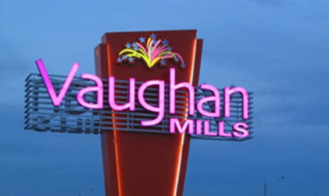
-
午餐有精美小食和酒水供应，并有神秘嘉宾颁发奖品、合影留念。
-
15:00
结束打球，开香槟庆祝。旅客前往洗漱间洗漱、更衣。
-
17:00
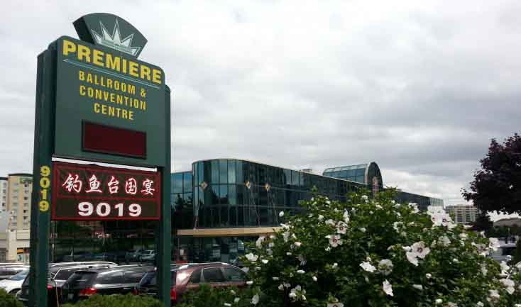返回列治文山（Richmond Hill）钓鱼台国宴酒店享用晚餐，当地政商界名人参加并留影。
伍德布里奇高尔夫乡村俱乐部（或同级）
伍德布里奇高尔夫乡村俱乐部成立于1924年，隐藏在圣华金河谷中，俱乐部的葡萄园和樱桃园中设有一个27洞的冠军级高尔夫球场，一个现代化的会所休闲和正式的餐厅，网球设施与7个网球场和一个全尺寸的游泳池。
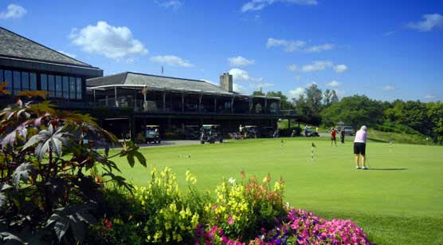第七天
-
早餐在四季酒店享用。
-
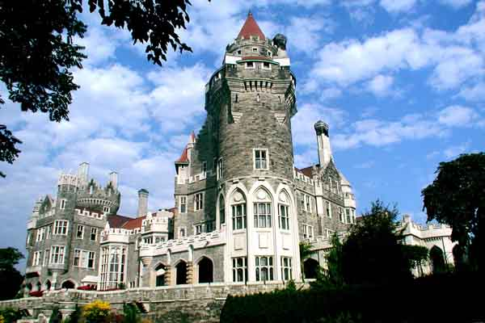早餐后有导游带领游览多伦多市中心。包括世界闻名的多伦多大学(University of Toronto)、古典主义的卡萨罗马城堡（ Casa Loma ）、历史悠久的唐人街 (China Town)、在北美五大湖之一安大略湖(Lake Ontario)游船、Bloor名品街购物。
-
晚餐在市中心纯正的日本居酒屋享用。
-
晚餐后返回酒店，安排游客一对一服务，解答客人在九天行程中关于加拿大移民、留学、投资项目、地产的疑难问题。
多伦多市中心一日游
多伦多大学： 位于多伦多市中心，与安大略省政府及议会环绕在市中心的女王公园四周。 多伦多大学是美国大学协会仅两名在美国本土外成员之一。2014年，多伦多大学世界排名第14，加拿大排名第一。
卡萨罗马城堡：城堡于1914年建成，有98个房间，当时是加拿大最大的私人宅邸。它是由加拿大著名的建筑师爱德华·兰诺斯设计，佩雷特爵士出钱建造的。可惜的是佩雷特爵士一家只在里面住了11年，就被迫把它卖掉了。1937年，同济会俱乐部把它租下并发展成为一个旅游胜地。
安大略湖： 是世界第十四大湖，位于北美中东部地区，美国与加拿大交界处，北邻加拿大安大略省，南毗尼亚加拉半岛和美国纽约州。它是北美洲五大淡水湖之一，属于世界最大的淡水湖群。
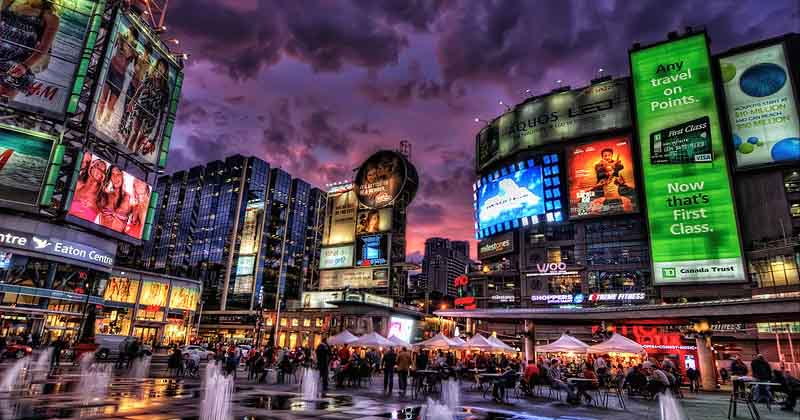第八天和第九天
-
17:15
海南航空7976多伦多皮尔逊机场起飞。（具体航班以出团通知书为准）
-
18:40
到达北京国际机场，全程飞行13小时25分钟。
-
经济舱：CAD $14888
-
商务舱：CAD $18888